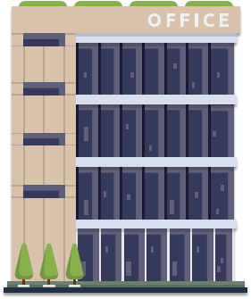
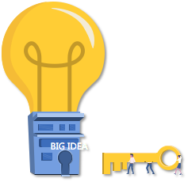
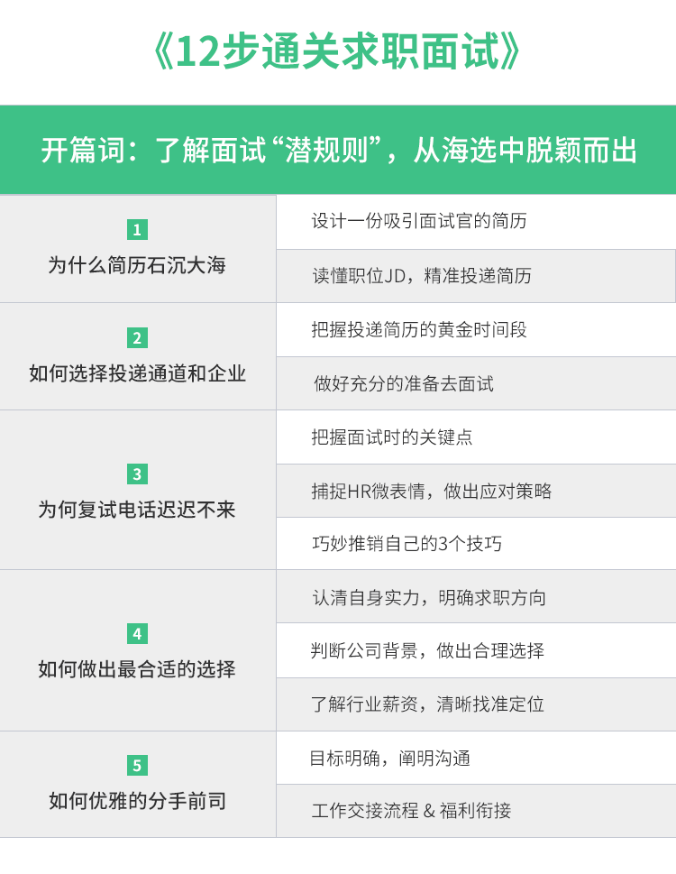

- 00 开篇词：了解面试“潜规则”，从海选中脱颖而出.md.html
- 01 设计一份吸引面试官的简历.md.html
- 02 读懂职位 JD，精准投递简历.md.html
- 03 把握投递简历的黄金时间段.md.html
- 04 做好充分的准备去面试.md.html
- 05 把握面试时的关键点.md.html
- 06 捕捉 HR 微表情，做出应对策略.md.html
- 07 巧妙推销自己的 3 个技巧.md.html
- 08 认清自身实力，明确求职方向.md.html
- 09 判断公司背景，做出合理选择.md.html
- 10 了解行业薪资，清晰找准定位.md.html
- 11 目标明确，阐明沟通.md.html
- 12 工作交接流程福利衔接.md.html
00 开篇词：了解面试“潜规则”，从海选中脱颖而出
你好，欢迎解锁由拉勾提供的面试指导课程，我是你的职场导师堃哥。目前担任拉勾网的招聘总监职务，具有近 10 年的人力资源—招聘方向的工作经验，曾经就职于美团、新东方等公司。 原本读经济学的我无意中接触到了欧洲猎头顾问的工作流程，深深被他们的专业分析能力、对企业以及候选人熟练的把控能力所吸引，他们可以帮助一家面临困难的企业寻找到合适的候选人，同时也可以帮助那些处于职业迷茫期的候选人寻找到实现自我价值的工作方向。
因此，毕业后我就回国踏入了国内的猎头行业。2010 年左右，国内猎头行业刚刚起步，所谓的猎头顾问还只是一个电话销售的职责，单纯、机械化地询问候选人是否考虑新机会。虽然和我预期的工作内容不太一样，但经过一年的电话沟通，训练了我可以通过候选人的介绍而发现他工作中和变化工作中的问题点。 后来为了进一步提升自己，进入了互联网公司。期间经历了互联网快速增长的过程、大批量的人员面试以及多样本的磨练，帮助我可以通过「快速提问、逻辑的沟通」来判读一位候选人的真实求职目的和个人性格方面的问题，帮助企业招聘的岗位从最初的助理岗到公司高管岗，从团队里的单个支撑岗位到整个新业务的建设。经过多年的磨练从最初的招聘小白，到帮助公司发现目前遇到的问题然后通过人才引入或者内部人才培养的方式使公司走出困境的招聘专家。 
招聘市场的“551 定律”
你知道招聘市场的“551 定律”吗？ 551 定律：每一层筛选环节都会有百分之十的折损率。一个岗位从接收简历到发下 Offer 至少要筛选 500 份左右的简历、面试 50 人左右、只有 5 人左右通过面试，最终也只有 1 位候选人可以顺利入职。  对于企业内的招聘人员平均每天至少在一个岗位上要收到几百份简历，至少要面试十几个候选人，每周至少会发出 4~5 个 Offer；一周内至少同时会招聘 5~7 个不同的岗位。因此，可以看出，招聘人员的工作强度是非常巨大的，面试者需要把控好每个环节的节奏并表现优秀，才能得到最好的结果。 所以说你的简历是否对自己的工作内容和项目经历描述清晰，你的面试表达是否可以直击面试官的问题要点，你的Offer沟通是表现的完美无缺，都对你能否赢得心仪的岗位至关重要。
面试的那些事
1.简历已被阅读却迟迟没有回应 相信大部分人都会有这样的疑惑：每个求职的早上都会迫不及待的打开手机查看是否收到昨天投递简历的回复，发现都显示为“您的简历已经被阅读”的状态，带着兴奋的心情等待着心仪企业的面试邀请电话，上午过去了没有接到电话，午饭时间过去了没有接到电话，下班了仍然没有接到电话，第二天、第三天……一直没有收到任何的信息，一度以为自己的手机是否坏掉了或者怀疑招聘人员是不是忘记了拨打电话… 2.面试很顺利却迟迟没有收到录用通知 相信你也会有这样的困惑：好不容易收到面试电话，兴奋的不能自已，提前和公司请了假，穿上非常体面的衣服，吃一个元气满满的早餐，做好充分的准备去面试。面试时费尽心力地展示自己，把从事过的工作内容和听说过的项目经验全部展示在面试官面前，这时的你侃侃而谈，表现得非常自信且积极正能量。但是，不知是否留意过面试官有时候针会对一个问题进行深入的提问或者偶尔出现锁眉的动作？ 3.面试了很多公司，难道能力已被透支 相信你有过这样的经历：面试了很久，也面试过 N 家公司，最后一份录用通知书也没有收到，此时是否开始对自己的工作能力表示深深的怀疑，真的是自己不够努力吗？之前的工作能力真的那么水吗？有没有想过也许就是与招聘人员沟通时的语气，与部门负责人的一次错误的意见表达等，导致公司对你的看法完全改变了，进而错过了接受心仪公司录用通知的机会。 这时候的你是不是感觉面试的道路上充满了坎坷，对自己的能力也产生了深深的质疑？ 其实求职之路并没有想象的那么复杂，接下来我会从一个面试官的角度来告诉你在简历上需要注意的细节点以及哪些内容是必须要提到的；在面对面试官时如何张弛有度地展示自己，在沟通中如何让面试官感觉到你就是那个公司一直在寻找的人选。
专栏设计
- 本专栏将解决以下问题 首先，将讲解如何设计简历，使其具有竞争力。比如，什么样的简历是招聘人员最喜欢的，怎么样的板书清晰明了、逻辑清晰，对于自己想要面试的职位如何更好的突出自己简历的优势，哪些工作项目是为自己增分，而哪些项目即使再努力描述也只会减分等。 其次，将从投递简历的时间点和投递方式开始分析，通过大数据分析来告诉你企业招聘人员的工作作息，这样有针对性的投简历更能快速地让面试官看到。 继而，在面试过程中怎么介绍自己会显得更有逻辑、更受面试官的欢迎。面试的哪些动作是说明他对你的经历很有兴趣需要多多的展示自己，哪些动作是对你的经历有所怀疑，可以换种思路介绍。 再次，是否会想过：你对企业真的有价值吗？真的是企业在找的那个人吗？知道自己的价值后才可以更好的为自己争取符合自己能力的薪资。专栏里会简单介绍行业的薪酬情况，以帮助你更好的明确自己如何找到定位，以及当接到多个录用通知的时候，如何清晰地判断哪个最有利于自己发展。 最后，经过九九八十一难，终于收到 Offer 了。可是，怎么和公司谈离职的时候还可以得到好的离职背调评价呢？社保、公积金等福利怎么做好两家公司之间的交接工作？专栏的最后会和你分享如何优雅的分手前司。
- 你将获得 这个专栏适合所有在求职过程中遇到问题的读者，不论你是一位刚刚踏出校园的职场菜鸟，还是已经工作多年的职场老手，只要在求职过程中遇到过以上问题，都会为你解答。 通过这个专栏的学习，将有以下收获：
- 可以写出一份直接抓住面试官眼球的简历；
- 在设计简历时突出自己的优点、项目经验，以及个人特长怎么写才是最合适的；
- 面试中怎么回答一些常规问题更能获得赞许；
- 如何选出一份可以让自己职业发展最好的工作，为自己的未来做一个完美的规划。
- 课程寄语
认真看完这个专栏后，相信你通过对自己的重新塑造，在事业上能够有一个崭新和充满希望的旅程~
